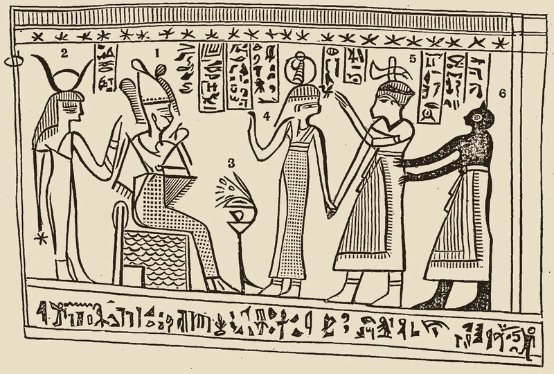

Mormonism is somewhat unusual among cults of Christianity in that it has made specific historical claims that fail the evidence and has since redefined them as untestable, best demonstrated by the Book of Abraham. Biblical Christianity, by contrast, rests on a single testable claim, the historical resurrection of Jesus Christ, with evidence publicly available from the beginning, and the text carrying that claim has been transmitted well enough that we can still examine it.
A Testable Claim
What Smith Published
The angel Moroni removed the golden plates from the earth as soon as Joseph Smith finished privately translating them, removing any possible falsification. However, the Church of Jesus Christ of Latter-day Saints has a trail of evidence for another revelation, the Book of Abraham.
Joseph Smith acquired a collection of papyri from a traveling exhibitor in 1835. He began translating that year. He left no record of his methodology and contemporaries reported only that the words came to him by revelation. The Church’s own newspaper at Nauvoo, the Times and Seasons, began publishing the completed English text in 1842: Facsimile 1 in the March 1 issue, Facsimile 3 on May 16. Later, the church officially canonized it as part of the Pearl of Great Price in 1880.
His translation elaborates doctrines like the pre-existence of human souls and the plurality of gods, narrated in the first person by Abraham. Egyptology was a developing academic field in the mid 19th Century and largely unknown in America.
What the Papyri Actually Are
In 1966 archivists from the Metropolitan Museum of Art rediscovered some of the original papyri fragments. Egyptologists almost universally recognized it as a standard funerary text dating from the late Ptolemaic or early Roman period (200 BC to 100 AD) with no relation to the Biblical patriarch.1
The fragments were not anonymous. The main text is a Book of Breathings, a funeral document prepared for a Theban priest named Hor and buried with him to carry him through the afterlife. It names its owner and it names his mother. Klaus Baer published a translation of it in 1968, and Robert Ritner produced the standard critical edition in 2011. Nothing in it concerns Abraham.2
Facsimile 1 is in fact an important illustration that weakens the credibility of Smith’s supposed revelation. The image is adjoined to the Book of Breathings text on the same roll. Whatever else might be missing from it cannot explain away Smith’s mismatched translation. The ancient text reads plainly as a standard priest’s funeral papyrus.3
The Two Defenses
Joseph Smith, the church now says, may not have provided a conventional translation. LDS apologists sometimes try to resolve the problem by saying his translation work sparked a spiritual “catalyst” unrelated to the writing itself. Others argue instead that the portions of the roll Smith actually translated are lost.4
Neither defense resolves the problem. The catalyst theory directly contradicts the claim under which the book was published: a literal, character-by-character translation. Worse still, the surviving papyri contain drawings reproduced by Smith that he claimed the text explained. He mistook the ba-spirit, the soul of the deceased, who is assimilated to Osiris, for the Angel of the Lord.5
The papyrus is damaged at that spot, and when the facsimile was prepared for publication the bird was restored with a falcon’s head. The surviving original clearly shows a human head, which is what makes it a ba. Ritner’s comment is that Smith’s identification holds only if Smith’s “Lord” was Osiris.6
Facsimile 3 is cleaner, because it is undamaged. Smith’s published explanation names the enthroned figure as Abraham sitting on Pharaoh’s throne, the woman standing behind him as “King Pharaoh,” and the figure leading the central man forward as “Prince of Pharaoh.” It then tells the reader that the characters written above each head supply those names. However, when read in Egyptian, the scene looks entirely different, though rather typical of such funeral texts. The central man is welcomed by Maat and Anubis into the presence of Osiris, who is enthroned as king of the underworld, with Isis behind him. Smith has identified a goddess as a king, a second goddess as a prince, and the god of the dead as Abraham, and he has cited the writing above their heads as his authority.7

The Papyrus Was His Source
The link between the papyrus and the text is not an inference either. The Church has published Smith’s own working papers. In the Kirtland Egyptian Papers, characters taken in order from this same papyrus run down the left margin with verses of the Book of Abraham set opposite them.8
As for the alleged scale mismatch, Baer measured the papyrus himself. His measurements indicate the original roll was roughly 150 to 155 centimeters, only safely allowing for the Breathings text and its pictures. Ritner calls Baer’s estimate correct, and finds no justification for an attempt to more than double it to about 320 centimeters. Andrew Cook and Christopher Smith later confirmed Baer by a different route. Damage that cut through the rolled scroll left the same hole on every turn, and the distance from one appearance of a hole to the next is the length of that turn. Each turn is shorter than the one outside it, so adding the turns together gives the amount of papyrus wound inside. They put about 56 centimeters missing from the interior where Baer put 59, and the whole scroll at roughly 150 centimeters.9 That leaves no room for the lost source text the missing-roll defense requires.
Baer also set Smith’s interpretations beside an Egyptologist’s reading of the same characters, in parallel columns. A few signs meaning roughly “the great pool of Khons” and “Osiris, born to Tikhebyt” stand opposite several hundred words of first-person Abraham narrative.10
And, of course, any possible lost portions of the roll could not explain away the mistranslations of what remains.
Can Both Defenses Be True?
In fact, both defenses contradict each other. The missing-roll argument keeps the claim that Smith translated conventionally, and saves it by putting the source beyond anyone’s reach. The catalyst theory gives up conventional translation altogether and makes the papyrus an occasion rather than a source. One says the translation was real and the evidence is gone; the other says the evidence is here and it was never a translation. Both appear in a single 1988 article in the Church’s own magazine. Michael D. Rhodes, then a researcher in ancient scriptures at Brigham Young University, first suggests the text “may have been taken from a different portion of the papyrus rolls in Joseph Smith’s possession,” and then proposes that Smith made no “literal translation, as scholars would use the term,” but received “the meaning, or subject-matter content of the original text.”11 They offer either argument as the occasion requires. Smith published his translation of a document anyone could examine. Egyptologists examined it. The Church has since redefined the claim so that no one can examine it again.
The catalyst theory was not part of the original claim. A Church publication set it out in 1988, and the Church’s own Gospel Topics essay adopted it in 2014, decades after Egyptologists identified the papyri in 1966.12
The Unique LDS Problem
The Book of Mormon makes plenty of its own ahistorical claims of pre-Columbian America, including anachronistic crops, horses, steel weapons, and large complex cities. LDS teachers are still generally correct in claiming that the lack of evidence is not evidence of absence.
That principle has a limit, though. Absence of evidence counts for little where evidence would have been scarce in any case, and counts for a great deal where evidence should be abundant. The Book of Mormon records a final battle at Cumorah in which twenty-three Nephite commanders fell, each leading ten thousand men, for a death toll of 230,000 in a single place, and that before counting the Lamanite dead (Mormon 6:10–15). A slaughter on that scale should have left remains of bones, metal, and ash.
Regardless, Mormons lack any testable means to demonstrate Smith accurately transcribed the original golden plates at all. In fact, their missionaries are taught to instruct skeptics to pray to receive a confirmatory witness. They often cite Moroni 10:4 as support, creating a circular contradiction: the test to confirm scripture is found in that scripture itself.
While Smith penned their other scriptures entirely from supposed supernatural revelation, his translation of an existing Egyptian text is a testable claim that fails the evidence.
The Biblical Standard
By contrast, the New Testament survives in about 6,000 Greek manuscripts, with many thousands more in Latin, Syriac, Coptic and other ancient versions.13
Unlike Mormonism, which cannot claim verified textual purity, the New Testament manuscripts have no variant text that significantly changes a doctrine by itself.
The Christian confession that Jesus was raised from the dead is not a claim that relies entirely on Scripture’s authority. Instead, Scripture asks the reader to examine external evidence, naming the place of the empty tomb and witnesses to the events who could still be questioned.
Furthermore, the gospel writers intended to give an orderly account of events (Luke 1:1–4), citing living witnesses of events (1 Corinthians 15:6) or were themselves participants in the narratives (John 19:35). The truth of Biblical Christianity relies on the attested fact of the empty tomb. We can trust Jesus as the Christ who gives eternal life because the evidence shows He is alive forevermore (Revelation 1:18).
Mormonism, as the Book of Abraham shows, fails to meet any similar standards of historicity.
The Promise Itself
Jesus is resurrected and therefore can secure the promise of eternal life to anyone who believes (John 11:25–26). Mormonism not only makes ahistorical claims, but dramatically redefines the gospel as “It is by grace that we are saved, after all we can do” (2 Nephi 25:23). The gift of new life in Christ is completely by grace through faith, in spite of everything we have done or ever will do. It is amazing grace, and it is true because our risen Lord secures it.
Interested in the actual Biblical account? Read Abraham: Father of Faith.
- Robert K. Ritner, “The ‘Breathing Permit of Hor’ Thirty-Four Years Later,” Dialogue: A Journal of Mormon Thought 33, no. 4 (Winter 2000): 97–119. ↩
- Klaus Baer, “The Breathing Permit of Hor: A Translation of the Apparent Source of the Book of Abraham,” Dialogue: A Journal of Mormon Thought 3, no. 3 (Autumn 1968): 109–34; Robert K. Ritner, The Joseph Smith Egyptian Papyri: A Complete Edition (Salt Lake City: Signature Books / Smith-Pettit Foundation, 2011). ↩
- Ritner, “Breathing Permit of Hor”; Baer, “Breathing Permit of Hor.” ↩
- “Translation and Historicity of the Book of Abraham,” Gospel Topics Essays, The Church of Jesus Christ of Latter-day Saints, accessed October 10, 2026, https://www.churchofjesuschrist.org/study/manual/gospel-topics-essays/translation-and-historicity-of-the-book-of-abraham. ↩
- Ritner, “Breathing Permit of Hor,” 102n28. ↩
- Baer, “Breathing Permit of Hor,” 118n34, crediting Dee Jay Nelson as the first to notice the human head; Ritner, “Breathing Permit of Hor,” 102n28. ↩
- Baer, “Breathing Permit of Hor,” 126–27. ↩
- The Joseph Smith Papers, Revelations and Translations, Volume 4: Book of Abraham and Related Manuscripts, ed. Robin Scott Jensen and Brian M. Hauglid (Salt Lake City: Church Historian’s Press, 2018). ↩
- Ritner, “Breathing Permit of Hor,” 101, and 101n24 on the longer estimate; Andrew W. Cook and Christopher C. Smith, “The Original Length of the Scroll of Hôr,” Dialogue: A Journal of Mormon Thought 43, no. 4 (Winter 2010). ↩
- Baer, “Breathing Permit of Hor,” 130–32. ↩
- Michael D. Rhodes, “I Have a Question: Why doesn’t the translation of the Egyptian papyri found in 1967 match the text of the book of Abraham in the Pearl of Great Price?,” Ensign, July 1988, 51–53. ↩
- Rhodes, “I Have a Question,” 51–53; “Translation and Historicity of the Book of Abraham.” ↩
- Daniel B. Wallace, “How Tall Would a Stack of New Testament Manuscripts Be?,” January 1, 2023, https://danielbwallace.com/. See also Robert Wilkin, “How Many Complete Greek New Testament Manuscripts Do We Have?,” Grace Evangelical Society (blog), January 10, 2023. ↩